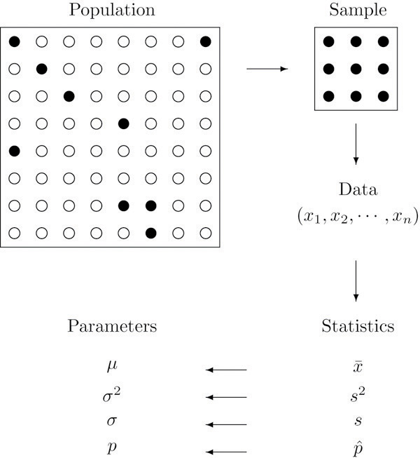

In this chapter we will introduce some basic terminology and lay the groundwork for the course. We will explain in general terms what statistics and probability are and the problems that these two areas of study are designed to solve.
We begin with a simple example. There are millions of passenger automobiles in the United States. What is their average value? It is obviously impractical to attempt to solve this problem directly by assessing the value of every single car in the country, adding up all those numbers, and then dividing by however many numbers there are. Instead, the best we can do would be to estimate the average. One natural way to do so would be to randomly select some of the cars, say 200 of them, ascertain the value of each of those cars, and find the average of those 200 numbers. The set of all those millions of vehicles is called the population of interest, and the number attached to each one, its value, is a measurement. The average value is a parameter: a number that describes a characteristic of the population, in this case monetary worth. The set of 200 cars selected from the population is called a sample, and the 200 numbers, the monetary values of the cars we selected, are the sample data. The average of the data is called a statistic: a number calculated from the sample data. This example illustrates the meaning of the following definitions.
A populationAll objects of interest. is any specific collection of objects of interest. A sampleThe objects examined. is any subset or subcollection of the population, including the case that the sample consists of the whole population, in which case it is termed a census.
A measurementA number or attribute computed for each member of a set of objects. is a number or attribute computed for each member of a population or of a sample. The measurements of sample elements are collectively called the sample dataThe measurements from a sample..
A parameterA number that summarizes some aspect of the population. is a number that summarizes some aspect of the population as a whole. A statisticA number computed from the sample data. is a number computed from the sample data.
Continuing with our example, if the average value of the cars in our sample was $8,357, then it seems reasonable to conclude that the average value of all cars is about $8,357. In reasoning this way we have drawn an inference about the population based on information obtained from the sample. In general, statistics is a study of data: describing properties of the data, which is called descriptive statistics, and drawing conclusions about a population of interest from information extracted from a sample, which is called inferential statistics. Computing the single number $8,357 to summarize the data was an operation of descriptive statistics; using it to make a statement about the population was an operation of inferential statistics.
StatisticsCollection, display, analysis, and inference from data. is a collection of methods for collecting, displaying, analyzing, and drawing conclusions from data.
Descriptive statisticsThe organization, display, and description of data. is the branch of statistics that involves organizing, displaying, and describing data.
Inferential statisticsDrawing conclusions about a population based on a sample. is the branch of statistics that involves drawing conclusions about a population based on information contained in a sample taken from that population.
The measurement made on each element of a sample need not be numerical. In the case of automobiles, what is noted about each car could be its color, its make, its body type, and so on. Such data are categorical or qualitative, as opposed to numerical or quantitative data such as value or age. This is a general distinction.
Qualitative dataMeasurements for which there is no natural numerical scale. are measurements for which there is no natural numerical scale, but which consist of attributes, labels, or other nonnumerical characteristics.
Quantitative dataNumerical measurements that arise from a natural numerical scale. are numerical measurements that arise from a natural numerical scale.
Qualitative data can generate numerical sample statistics. In the automobile example, for instance, we might be interested in the proportion of all cars that are less than six years old. In our same sample of 200 cars we could note for each car whether it is less than six years old or not, which is a qualitative measurement. If 172 cars in the sample are less than six years old, which is 0.86 or 86%, then we would estimate the parameter of interest, the population proportion, to be about the same as the sample statistic, the sample proportion, that is, about 0.86.
The relationship between a population of interest and a sample drawn from that population is perhaps the most important concept in statistics, since everything else rests on it. This relationship is illustrated graphically in Figure 1.1 "The Grand Picture of Statistics". The circles in the large box represent elements of the population. In the figure there was room for only a small number of them but in actual situations, like our automobile example, they could very well number in the millions. The solid black circles represent the elements of the population that are selected at random and that together form the sample. For each element of the sample there is a measurement of interest, denoted by a lower case x (which we have indexed as to tell them apart); these measurements collectively form the sample data set. From the data we may calculate various statistics. To anticipate the notation that will be used later, we might compute the sample mean and the sample proportion , and take them as approximations to the population mean μ (this is the lower case Greek letter mu, the traditional symbol for this parameter) and the population proportion p, respectively. The other symbols in the figure stand for other parameters and statistics that we will encounter.
Figure 1.1 The Grand Picture of Statistics
Explain what is meant by the term population.
Explain what is meant by the term sample.
Explain how a sample differs from a population.
Explain what is meant by the term sample data.
Explain what a parameter is.
Explain what a statistic is.
Give an example of a population and two different characteristics that may be of interest.
Describe the difference between descriptive statistics and inferential statistics. Illustrate with an example.
Identify each of the following data sets as either a population or a sample:
Identify the following measures as either quantitative or qualitative:
Identify the following measures as either quantitative or qualitative:
A researcher wishes to estimate the average amount spent per person by visitors to a theme park. He takes a random sample of forty visitors and obtains an average of $28 per person.
A researcher wishes to estimate the average weight of newborns in South America in the last five years. He takes a random sample of 235 newborns and obtains an average of 3.27 kilograms.
A researcher wishes to estimate the proportion of all adults who own a cell phone. He takes a random sample of 1,572 adults; 1,298 of them own a cell phone, hence 1298∕1572 ≈ .83 or about 83% own a cell phone.
A sociologist wishes to estimate the proportion of all adults in a certain region who have never married. In a random sample of 1,320 adults, 145 have never married, hence 145∕1320 ≈ .11 or about 11% have never married.
A population is the total collection of objects that are of interest in a statistical study.
A sample, being a subset, is typically smaller than the population. In a statistical study, all elements of a sample are available for observation, which is not typically the case for a population.
A parameter is a value describing a characteristic of a population. In a statistical study the value of a parameter is typically unknown.
All currently registered students at a particular college form a population. Two population characteristics of interest could be the average GPA and the proportion of students over 23 years.
The example we have given in the first section seems fairly simple, but there are some significant problems that it illustrates. We have supposed that the 200 cars of the sample had an average value of $8,357 (a number that is precisely known), and concluded that the population has an average of about the same amount, although its precise value is still unknown. What would happen if someone were to take another sample of exactly the same size from exactly the same population? Would he get the same sample average as we did, $8,357? Almost surely not. In fact, if the investigator who took the second sample were to report precisely the same value, we would immediately become suspicious of his result. The sample average is an example of what is called a random variable: a number that varies from trial to trial of an experiment (in this case, from sample to sample), and does so in a way that cannot be predicted precisely. Random variables will be a central object of study for us, beginning in Chapter 4 "Discrete Random Variables".
Another issue that arises is that different samples have different levels of reliability. We have supposed that our sample of size 200 had an average of $8,357. If a sample of size 1,000 yielded an average value of $7,832, then we would naturally regard this latter number as likely to be a better estimate of the average value of all cars. How can this be expressed? An important idea that we will develop in Chapter 7 "Estimation" is that of the confidence interval: from the data we will construct an interval of values so that the process has a certain chance, say a 95% chance, of generating an interval that contains the actual population average. Thus instead of reporting a single estimate, $8,357, for the population mean, we would say that we are 95% certain that the true average is within $100 of our sample mean, that is, between $8,257 and $8,457, the number $100 having been computed from the sample data just like the sample mean $8,357 was. This will automatically indicate the reliability of the sample, since to obtain the same chance of containing the unknown parameter a large sample will typically produce a shorter interval than a small one will. But unless we perform a census, we can never be completely sure of the true average value of the population; the best that we can do is to make statements of probability, an important concept that we will begin to study formally in Chapter 3 "Basic Concepts of Probability".
Sampling may be done not only to estimate a population parameter, but to test a claim that is made about that parameter. Suppose a food package asserts that the amount of sugar in one serving of the product is 14 grams. A consumer group might suspect that it is more. How would they test the competing claims about the amount of sugar, 14 grams versus more than 14 grams? They might take a random sample of perhaps 20 food packages, measure the amount of sugar in one serving of each one, and average those amounts. They are not interested in the true amount of sugar in one serving in itself; their interest is simply whether the claim about the true amount is accurate. Stated another way, they are sampling not in order to estimate the average amount of sugar in one serving, but to see whether that amount, whatever it may be, is larger than 14 grams. Again because one can have certain knowledge only by taking a census, ideas of probability enter into the analysis. We will examine tests of hypotheses beginning in Chapter 8 "Testing Hypotheses".
Several times in this introduction we have used the term “random sample.” Generally the value of our data is only as good as the sample that produced it. For example, suppose we wish to estimate the proportion of all students at a large university who are females, which we denote by p. If we select 50 students at random and 27 of them are female, then a natural estimate is or 54%. How much confidence we can place in this estimate depends not only on the size of the sample, but on its quality, whether or not it is truly random, or at least truly representative of the whole population. If all 50 students in our sample were drawn from a College of Nursing, then the proportion of female students in the sample is likely higher than that of the entire campus. If all 50 students were selected from a College of Engineering Sciences, then the proportion of students in the entire student body who are females could be underestimated. In either case, the estimate would be distorted or biased. In statistical practice an unbiased sampling scheme is important but in most cases not easy to produce. For this introductory course we will assume that all samples are either random or at least representative.
In this book we will use two formats for presenting data sets. The first is a data listAn explicit listing of all the individual measurements made on a sample., which is an explicit listing of all the individual measurements, either as a display with space between the individual measurements, or in set notation with individual measurements separated by commas.
The data obtained by measuring the age of 21 randomly selected students enrolled in freshman courses at a university could be presented as the data list
or in set notation as
A data set can also be presented by means of a data frequency tableA table listing each distinct value x and its frequency f., a table in which each distinct value x is listed in the first row and its frequencyHow often a value x appears in a data set. f, which is the number of times the value x appears in the data set, is listed below it in the second row.
The data set of the previous example is represented by the data frequency table
The data frequency table is especially convenient when data sets are large and the number of distinct values is not too large.
List all the measurements for the data set represented by the following data frequency table.
List all the measurements for the data set represented by the following data frequency table.
Construct the data frequency table for the following data set.
Construct the data frequency table for the following data set.
{31,32,32,32,32,32,33,33,33,33,33,33,34,34,34,34,35,35}.